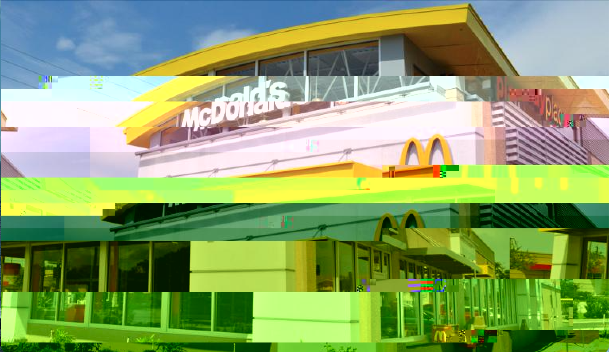
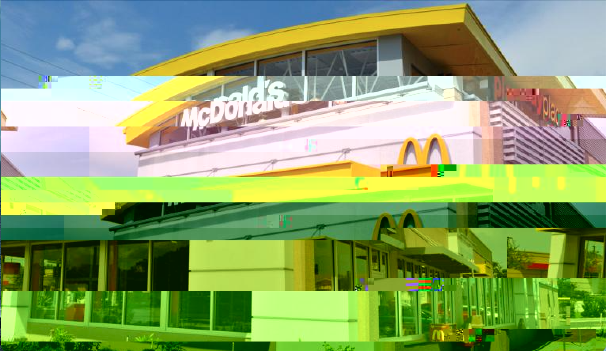

Glitch Art
Glitch Art is doing something unfamiliar with a piece of technology that you are familiar with. For example, I made the glitches below by taking the familiar .jpg image file and made changes to it using Audacity, which is an audio editor software, and TextEdit.
This series of images are related through the theme of fast food. I choose images from In-N-Out, Carl's Jr, and McDonalds because these are some of my favorite fast food places. Fast food advertisements always show their burgers and other food as perfectly put together, and they make it look as appealing as possible. These glitches represent how the food in real life never actually looks like it does in the commercials. The glitch of fast food also represents the way that some people see fast food as unhealthy, but I left the images with a pleasing aesthetic because I personally still enjoy eating fast food anyway.


 
